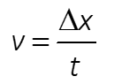
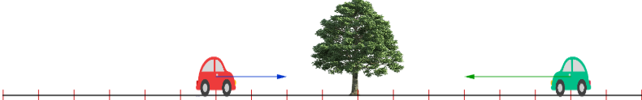

Una de las principales magnitudes que caracterizan un movimiento es la mayor o menor rapidez con la que se efectúa. La rapidez se mide mediante la velocidad. Es una magnitud vectorial.
La velocidad es la distancia que recorre un móvil en una unidad de tiempo. Se calcula dividiendo la distancia recorrida entre el tiempo. (Vídeo-Velocidad)

Aquí tienes un ejemplo de como describir a un móvil a través de su posición y de su velocidad.

- El vehículo rojo se encuentra 4 m a la izquierda del sistema de referencia (eA = -4 m), su velocidad tiene una magnitud de +2 m/s (positiva) y por lo tanto se dirige hacia la derecha.
- El vehículo verde se encuentra 8 m a la derecha del sistema de referencia (eB = +6 m), su velocidad tiene una magnitud de -3 m/s (negativa) y por lo tanto se dirige hacia la izquierda.
Ambos vehículos se cruzarán. Y ambos vehículos pasarán por el sistema de referencia.
Con la siguiente animación puedes practicar, tienes que hacer clic sobre el cuadrado "Posición y velocidad" para que se abran los controles.